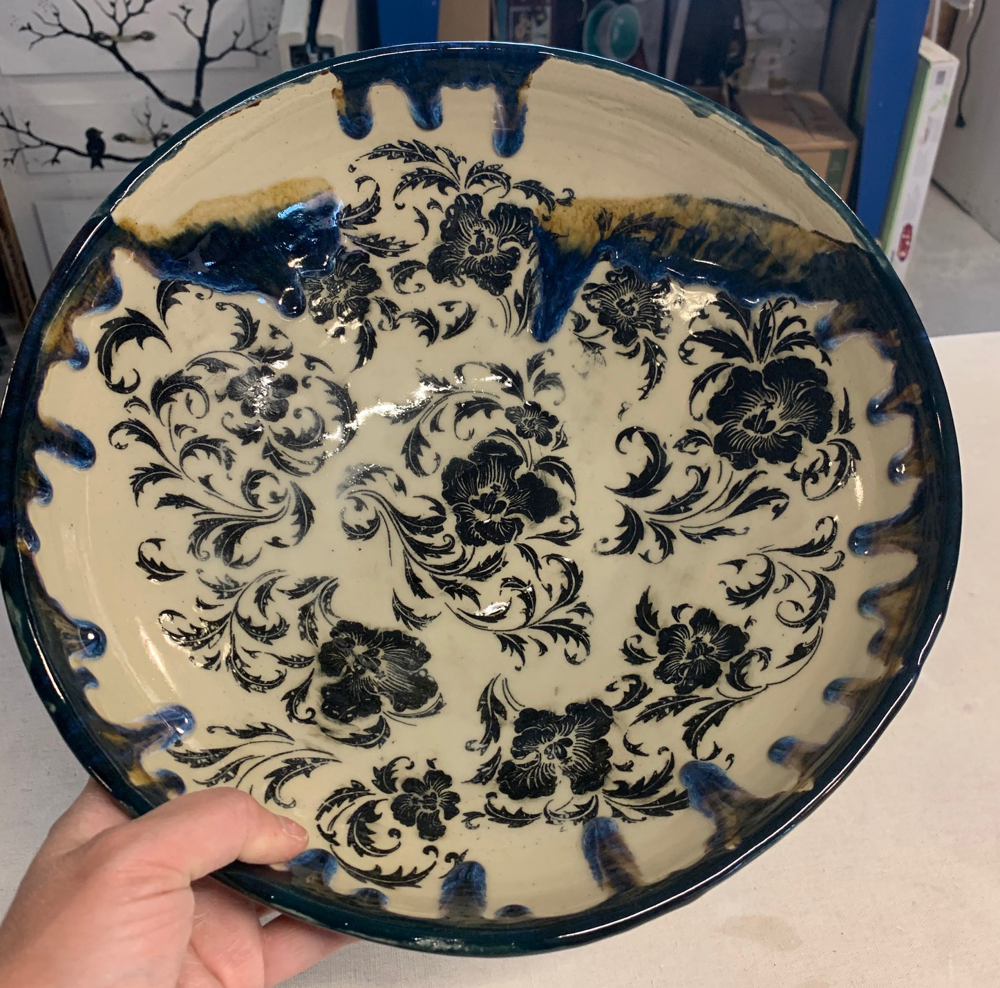
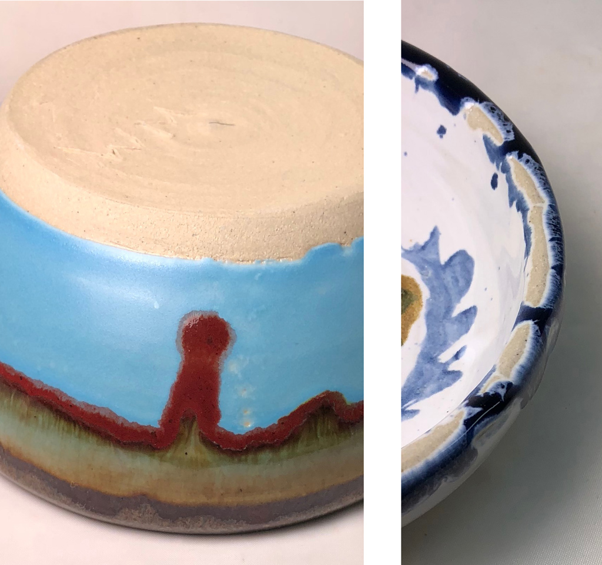
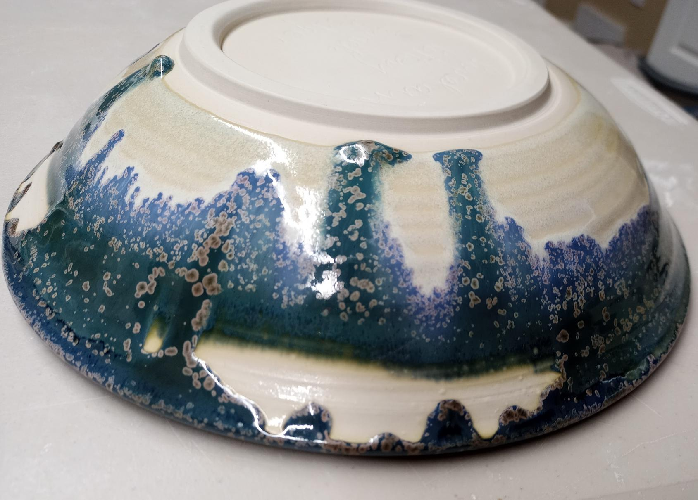
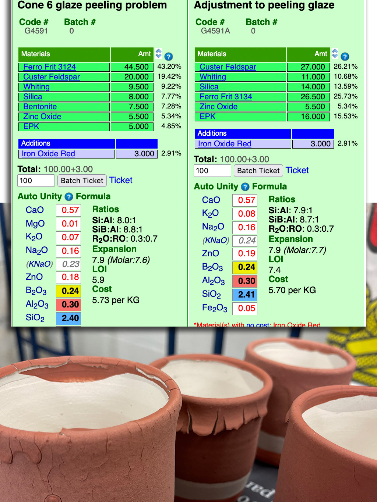
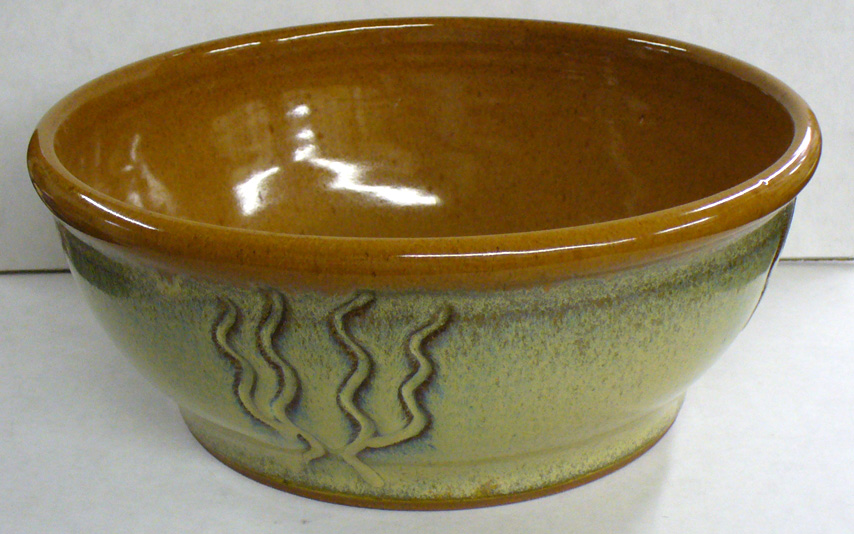
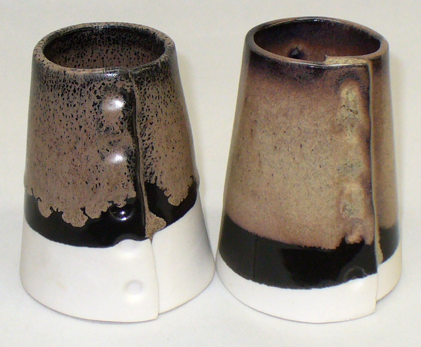
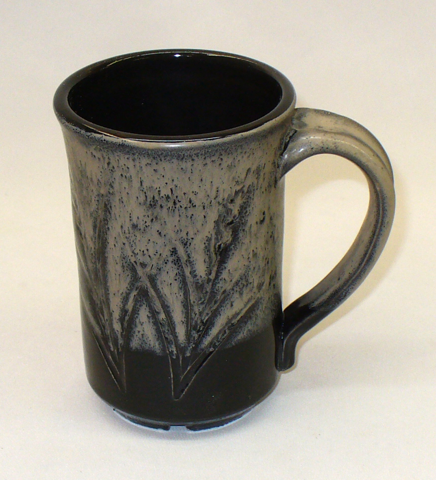
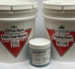
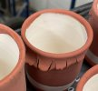
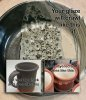

Glaze Layering
In hobby ceramics and pottery it is common to layer glazes for visual effects. Using brush-on glazes it is easy. But how to do it with dipping glazes? Or apply brush-ons on to dipped base coats?
Key phrases linking here: glaze layering, multi-layering, multi-layered - Learn more
Details
In hobby ceramics (at low temperatures) layering of glazes for decorative effects is commonplace - there are what seem like myriads of choices of bottled glaze products. Even potters are increasingly adopting them for their stoneware pottery and porcelain. Suppliers' showrooms are now dominated by bottled brushing glazes. The idea of DIY dipping glazes now seems quaint to many, even though bottled ones are very expensive. Multiple coats are typically applied. Each dries slowly, hardening as it does so (because it contains binders), providing a stable base for the next one. Although the process is slow (compared to dipping) and more difficult to get even coverage as layers multiply, the interactions between layers of varying degrees of opacity, melt fluidity and color produce stunning visual effects - they are an endless source of social media posts.
As noted, commercial bottled glazes contain a binder, typically CMC gum. In contrast, dipping glazes traditionally mixed by potters are just powdered minerals with a percentage of clay, typically 15-25%, which suspends the slurry and hardens the layer as it dries (and also shrinks it somewhat). These can apply to bisque in the needed thickness with one quick dip and often dry enough to permit handling within seconds. But, their bond with the bisque ware is fragile, especially if the bisque surface is smooth, damp or dense, or the glaze has either excessive or inadequate clay. Still, as long as the first layer is not too thick, the bond with the body is sometimes able to withstand the tension imposed when a second layer rewets and restresses it. But, more often, the second coat pulls the first one off (resulting in peeling or the formation of cracks). Glaze recipes that don't pass a sanity check are most likely to fail. This fact is most often ignored in articles about layering.
Multi-layering of dipping glazes can work by a balancing act of bisque surface and density, recipe adjustment, slurry preparation and application method. Perhaps you have been doing it with success. This could be because you understand all the variables but it could also be working by accident; a tipping point could be looming, all it might take for sudden failure is a small change in one or two factors. How-to pages about layering often don't even touch on the fundamental difficulties described here, the only way to understand this is that they have accidentally hit upon a way to make it work without realizing it.
For serious multi-layering of DIY glazes, there is one principal method, as noted above: Adding enough gum to produce a base coat dipping glaze. 1% is a good starting point. Gummed glazes are runnier, they drip (and drip more) and dry slowly on bisque. Traditional potters, used to single-layer gumless dipping glazes, can be shocked at how different it is to work with these. They won’t flocculate, the only practical way to increase viscosity is raising the specific gravity (as high as 1.6). Techniques to apply them evenly must be learned. Unless bisque ware is heated to accelerate drying, patience and ingenuity are needed to get even coverage of adequate thickness. Single dripping points are typically the best drainage option. Of course, spray application is an option, but achieving multilayering will still be time-consuming, and runs will be a constant issue.
Drying Time Per Layer
Allow time for each layer to dry completely - that could mean a whole day (applying a new layer to one that is wet, or even damp, is not going to go well). To accelerate the process, use a dryer.
Layering Commercial Bottled Glazes Over a DIY Base Coat
As already noted, the key is to mix the slurry as a base coat dipping glaze, these are gummed, but less so than brushing glazes. If it is then it will tolerate layers of commercial products. All ware needs some sort of cover or base glaze, and it makes a lot of sense (especially economic sense) to mix that yourself. The lower the percentage of gum the faster it will dry, the higher the percentage, the better it will adhere and the slower it will dry.
Firing Issues Regarding Layering of Glazes
-If multiple layers all have high melt fluidity: Each must be thin enough that the final combined thickness will not run excessively.
-A fluid first layer and a non-fluid second: Caution will still be needed as the weight of the second will pull downward on vertical walls.
-A non-fluid layer first and a fluid second layer: Here, there is an opportunity to make both of them thicker.
-Two non-fluid layers: Why would you do that? Layering is almost always about making them dance together, interact. And non-fluids will not do that.
-Three layers: Now you are getting adventurous!
Another factor to consider is thermal expansion. Layering a glaze that normally crazes with one that does not could cause cracking when ware exposed to sudden temperature change (because of the internal stresses that would be present).
Food Safety
Commercial glazes are labelled as being food safe, even if the color is very bright (adherence to ASTM D-4236 is actually not very reassuring). Traditional potters are not accustomed to putting high-percentage heavy-metal glazes on food surfaces. But that is still exactly what many commercial ones are. Use common sense. It is often better to employ non-coloured glazes on food surfaces that must accommodate hot or acidic liquids. When you make your own glazes for these surfaces you know the recipe and you are in control. Consider: Two different drugs may not have serious side effects on their own, but when taken together they can be dangerous. Likewise, a glaze may resist acid attack on its own but you can be sure there exist other glazes that, when mixed with or layered with it, will destabilize it enough to leach metals.
Related Information
Crawling can happen when paint-on glazes are layered over dipping glazes

This picture has its own page with more detail, click here to see it.
This bowl was dipped in a non-gummed clear dipping glaze. Such glazes are optimized for fast drying and even coverage. However their bond with the bisque is fragile. The blue over-glaze was applied thickly on the rim (so it would run downward during firing). But during drying, it shrunk and pulled the base coat away at the rim (likely forming many tiny cracks at the interface between the clear and the bisque. That initiated the cascade of crawling. When gummed dipping glazes are going to be painted over, a base-coat dipping glaze should be used. What is that? It is simply a regular fast-dry dipping glaze with some CMC gum added (perhaps half the amount as what would be used for painting). There is a cost to this: Longer drying times after dipping and less even coverage. And gum destroys the ability to gel the glaze and make the slurry thixotropic.
Commercial brushing glaze on a non-gummed dipping glaze: Crawling

This picture has its own page with more detail, click here to see it.
Non-gummed dipping glazes go on evenly and dry quickly on bisque ware (if properly gelled). But they only work well as a single layer. If you try to paint commercial gummed brushing glazes over them the latter will compromise their bond with the body, cracks will develop during drying and bare patches like this will result during firing. For multi-layering the base dipping glaze must be gummed (e.g. 1% CMC gum). It will go on thinner, drip longer and dry much slower, but that is the price to pay if you want to layer over it.
Multi-Layering on a Large Bowl has Produced Crawling
What does it take to make this work?

This picture has its own page with more detail, click here to see it.
Dipping glazes are typically just rock powder in water (with a little clay), it is actually amazing when they dry and adhere to bisque ware well enough to not crawl like this! There are multiple factors that can make the glaze/body bond even more fragile:
-Bisque surface is smooth.
-Bisque absorbs less water because it is damp, too dense (fired too high) or ware is thin-walled.
-The glaze does not pass a sanity check (e.g. it has excessive clay and shrinks too much on drying or has inadequate clay and goes on too thick and doesn't harden enough).
-The glaze slurry is flocculated and has too much water.
With all of this, we are lucky to get one layer to stick well enough to survive handling and not come crawling out of the kiln! But when a second layer is added, the body bond really gets tested. Just the rewetting stresses it. If glaze #2 contains more clay the situation is even worse, it shrinks on drying and pulls the first one away from the body.
The solution: Use a base coat dipping glaze conditioned with CMC gum for layering over. The degree to which the glaze exhibits the issue determines the percentage of gum needed (CMC slows down drying so minimize it). Some people have double-dipped for years without doing this. I am not one of them.
This pottery glaze is peeling when multi-layered:
The recipe reveals why.

This picture has its own page with more detail, click here to see it.
Dipping glazes can, in very controlled circumstances, be multi-layered. If you have done it for some time, with success, you may have been just lucky. These pieces demonstrate one of many factors that can produce failure: The top glaze contains 7% bentonite and 5% zinc oxide - that is 12% hyper-fine particles, perfect to create the drying shrinkage to make this happen. The recipe author must have reasoned that it could "pinch hit" for the inadequate clay content. But 7% bentonite in any glaze is highly unusual. And, it is actually not even necessary here. Why? The high percentage of Ferro Frit 3124 is sourcing needless Al2O3 (alumina), that should be coming from kaolin or ball clay instead. Frit 3134 is the perfect stand-in, it contains almost no Al2O3, but otherwise is quite similar. The equivalent recipe we calculated on the right has the same chemistry, but does pass a sanity check. It is not guaranteed to work, but has a better chance than this one. For even more assurance of success, it should be mixed as a base-coat dipping glaze.
Variegating effect of sprayed-on layer of titanium dioxide

This picture has its own page with more detail, click here to see it.
The base glaze (inside and out) is GA6-D Alberta Slip glaze fired at cone 6 on a buff stoneware. However, on the outside, the dried-on glaze was over-sprayed with a very thin layer of titanium and water (VeeGum can be used to help gel the sprayable titanium slurry and suspend it). The dramatic effect is a real testament to the variegating power of TiO2. An advantage of this technique is the source: Titanium dioxide. It is a more consistent source of TiO2 than the often-troublesome rutile. Another advantage is that the variegation can be selectively applied in specific areas or as a design. This effect should work on most glossy glazes having adequate melt fluidity.
Cone 6 black with a second layer of oatmeal glaze

This picture has its own page with more detail, click here to see it.
The underglaze is G1214M cone 6 black (adds 5% Mason 6666 black stain). Overglaze left: GR6-H Ravenscrag Oatmeal. Overglaze right: GA6-F Alberta Slip oatmeal. Both produce a very pleasant silky matte texture (the right being the best). Both layers are fairly thin. In production it would be best to spray the second layer, keeping it as thin as possible. It is also necessary to adjust the ratio of raw to roasted Alberta or Ravenscrag Slips to establish a balance between drying hardness but not too much drying shrinkage (and resultant cracking).
Ravenscrag oatmeal layered over black at cone 6

This picture has its own page with more detail, click here to see it.
This is GR6-H Ravenscrag Slip oatmeal over G1214M black on porcelain at cone 6 oxidation to create an oil-spot effect. Both were dipped quickly.
Layering glazes to get variegation

This picture has its own page with more detail, click here to see it.
Example of the variegation produced by layering a white glaze of stiffer melt (a matte) over a darker glaze of more fluid melt (a glossy). This was fired at cone 6. The body is a stoneware and the glazes employ calcium carbonate to encourage bubbling during melting, each bubble reveals the color and texture of the underlying glaze layer. It is also possible to get this effect using the same base glaze (stained different colors).
Inbound Photo Links
|
 Learn to mix any of your glazes for these three application methods |
 Shrinking glaze = peeling, cracking glaze |
 Multilayer crawling |
Links
| Glossary |
Specific gravity
In ceramics, the specific gravity of slurries tells us their water-to-solids ratio. That ratio is a key indicator of performance and enabler of consistency. |
| Glossary |
Thixotropy
Thixotropy is a property of ceramic slurries of high water content. Thixotropic suspensions flow when moving but gel after sitting (for a few moments more depending on application). This phenomenon is helpful in getting even, drip-free glaze coverage. |
| Glossary |
Calcination
Calcining is simply firing a ceramic material to create a powder of new physical properties. Often it is done to kill the plasticity or burn away the hydrates, carbonates, sulfates of a clay or refractory material. |
| Glossary |
Base-Coat Dipping Glaze
These are ceramic glazes intended for dipping but which contain a gum to enable them to adhere to the body better and tolerate over-layers without danger of flaking or cracking. |
| Glossary |
Brushing Glaze
Hobbyists and increasing numbers of potters use commercial paint-on glazes. It's convenient, there are lots of visual effects. There are also issues compared to dipping glazes. You can also make your own. |
| Glossary |
Dipping Glaze
In traditional ceramics and pottery dipping glazes can be of two main types: For single layer and for application of other layers overtop. Understanding the difference is important. |
| Troubles |
Crawling
Ask yourself the right questions to figure out the real cause of a glaze crawling issue. Deal with the problem, not the symptoms. |
| Materials |
CMC Gum
CMC gum is indispensable for many types of ceramic glazes. It is a glue and is mainly used to slow drying and improve adhesion and dry hardness. |
 PayPal | No tracking, No ads, No paywall, No transient content! Just organized, concise information constantly updated and improved. Was this helpful? Consider supporting me. |
| By Tony Hansen Follow me on        |  |
Got a Question?
Buy me a coffee and we can talk 

https://digitalfire.com, All Rights Reserved
Privacy Policy